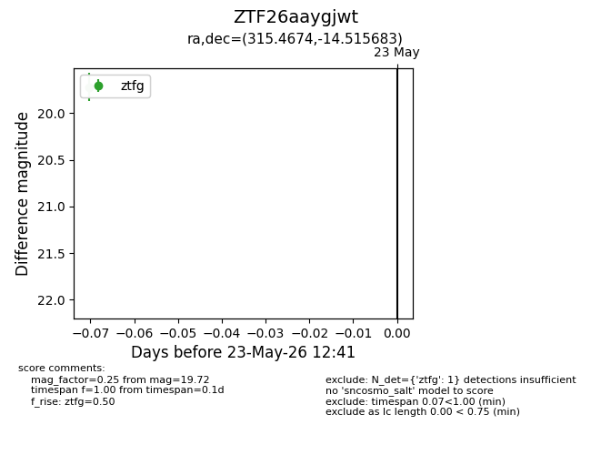
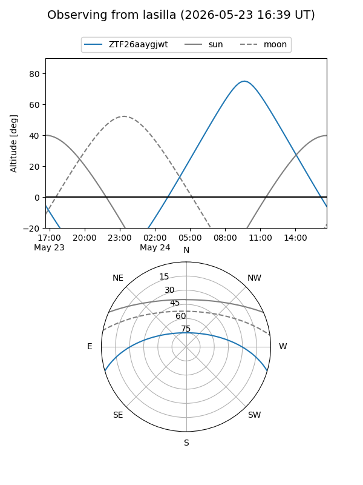
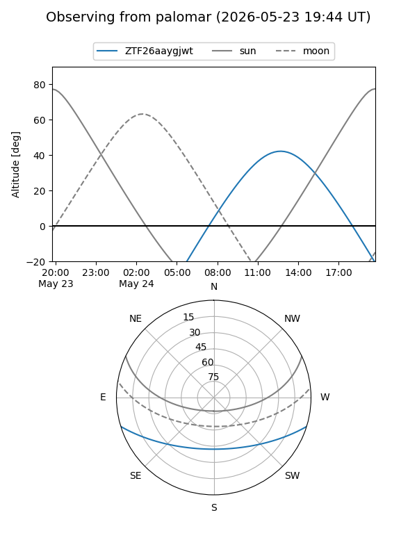

ZTF26aaygjwt
Target ZTF26aaygjwt at 2026-05-23 12:43
Aliases and brokers:
lsst-FINK: link
lsst-Lasair: link
lsst-ALeRCE: link
ztf-FINK: link
ztf-Lasair: link
ztf-ALeRCE: link
alt names
ZTF26aaygjwt (ztf,fink_ztf)
Coordinates:
equatorial (ra, dec) = 315.4674,-14.51568
equatorial (HMS+DMS) = 21:01:52.17,-14:30:56.46
galactic (l, b) = (33.9723,-35.35098)
Flags:
Photometry:
last ztfg=19.72
1 ztfg detections
Lightcurve

Visibility


Additional plots